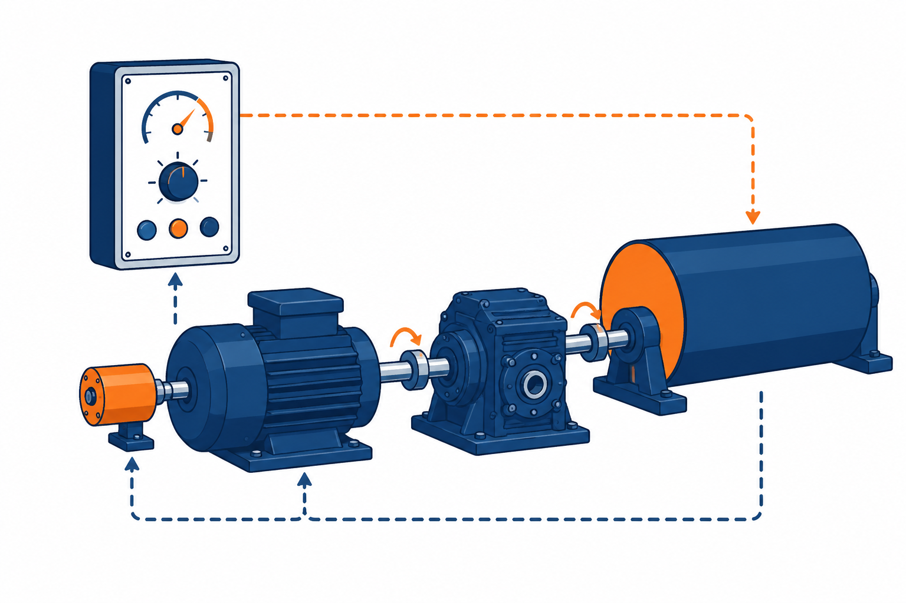

速度控制系统（电机 + 减速器 + 测速机）

原理结构划分（图 2-13）
m_c\ (\text{负载扰动})
电位器
u_r
运算放大器Ⅰ
G_1
运算放大器Ⅱ
G_2
功率放大器
G_3
电动机
G_u
测速发电机
G_f\ (\text{反馈联接})
n
测速发电机把转速
n
转换为反馈电压
u_f
，形成速度闭环
电位器
给定
u_r
➜
运放Ⅰ
G_1
比例
➜
运放Ⅱ
G_2
校正
➜
功放
G_3
放大
➜
电动机
G_u
n
输出，
M_c
扰动
➜
测速机
G_f
反馈
u_f